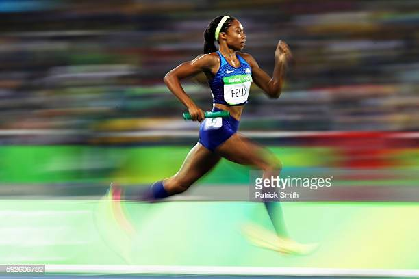

About:
Track and Field Athlete

Hometown: Los Angeles CA
High School: Los Angeles Baptist High School
College: University of Southern California
Allyson Felix is on the biggest runner’s high of her life after smashing one of Usain Bolt‘s world records on Sunday in Qatar. She took home her 12th gold medal at the World Championships on the mixed-gender 4×400 relay team, beating Bolt who previously held the record for most golds won at the track-and-field competition..
PERSONAL:
Residences